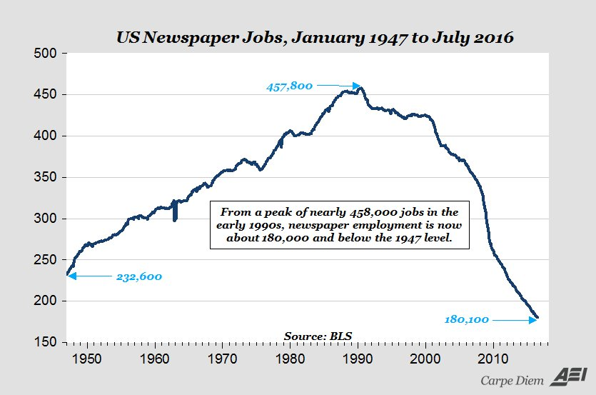

Senator Nick Xenophon, a man of great integrity, has reportedly struck a deal with the government over media reform. One aspect of it, as reported by The West Australian, is that the the government will subsidise 200 journalism scholarships of up to $40,000 a year. (I have no idea how this will work, but neither does anyone else that I can see.)
It should be obvious that the scholarships aspect of this deal is madness.
The madness is this: You don't fix a shortage of demand and an excess of supply by adding to supply.
Yet Xenophon says explicitly that this is what he thinks will happen: "This is the best package to ensure that we can actually get more journalists being employed not fewer."
For anyone who understands the basics of supply and demand, it will seem a negligently stupid scheme to lure a bunch of kids into a media industry that can't support the journalists it already has.
The scholarships plan will:
- Pump young, cheap journalists onto the market.
- Tempt regional news outlets to replace older, more expensive journalists with younger, cheaper ones.
- Make regional news outlets temporarily more profitable.
Here's how all that works ...
What's happening in the market for journalists
Quality news journalism indeed has a big problem - maybe not as big a problem as old-school media people claim, but a problem nevertheless. The media that traditionally used it cannot support it any more; their business models are being undermined by the Internet.
The class of stories that is getting lost, and that society really needs, is the detailed news investigation - the real journalism that involves unearthing facts rather than stating opinions, and that takes days to dig up rather than a media release and a couple of calls. Think Adele Ferguson.
While all this is happening, many news outlets are shedding staff. I've no good Australian numbers easily to hand, but here's how it's playing out in the US.

US newspaper jobs to July 2016If the government actually implements what Xenophon hopes it will, we may add a new supply of junior journalists to this job market. If that happens, it will not save the serious news investigation, or increase the number of Adele Fergusons. Owners will not say: "Hey, the government's sending lots of new journalists our way. Let's put them to work, and at the same time redeploy our best people to really dig for the tough stories."
In fact the effect will likely be quite the opposite. Media owners and their editors will use any new supply of junior journalists to replace the more expensive experienced journalists, the ones most fit to do the serious news investigation.
This isn't because owners and editors are evil. It's because the advertising dollars and readers and listeners and viewers which have supported these outlets for decades are now bleeding away. Forget higher quality; forget even steady employment. Most media outlets are trying just to arrest a slide in profitability.
This is not an industry in which it makes sense for society to attract more of the best and brightest. Most of them will either be out on their arses in short order, or filling the ranks of the PR firms' social media units. The situation was bad enough five years ago, and it has been getting worse since.
As outbreaks of madness go, however, this planned legislation is at least a little useful: it shows the rock-bottom standards of policymaking in this area.
This idea supposedly has a price for government, but it could end up costing nothing at all. The Education Department could end up using the scholarships to replace funding for some of the cheaply-staffed journalism schools that are pumping new journalism graduates into the job market right now.
Maybe it will all be fine ...
Look, I could be wrong about the future of investigative news journalism. Maybe, through some mechanism unknown to me, the field is set to boom. But I'm not just idly theorising; this is a real issue in my little world.
I talked my own son out of a journalism career by explaining to him that it was likely to involve lousy pay, a high risk of underemployment and a great deal of frustration.
I have also lectured to rooms full of journalism students about how journalism is evolving. I'm not doing it again, because it's really hard to suggest to kids that their last couple of years of study are preparing them for jobs that might mostly not exist - even when you're accentuating the positive and pulling every single one of your punches.
Now the government and Senator Xenophon are ready to entice more young people into journalism, with a promise that they cannot support: a promise that real journalism is a good place to find lasting employment. It seems to me an enormous, stupid deception - in Senator Xenophon's case, perhaps, self-deception.
Update: Yes, the broader deal looks weird too. At The Guardian, the trustworthy Lenore Taylor notes that parts of the overall deal seem structured specifically to exclude The Guardian.
I'm for it. Extremely intelligent people – people paid to lead the nation in thinking – are solving the lack of demand for scientists and mathematicians by making sure we train more.
So why can't it work for journalists?
Trickle down economics doesn't work, so we have to try something else!!
Trickle up economics.
More training = more money for those " extremely intelligent people" who run training programs and who advise government on the need for more training. No brainier.
It's been so in my neck of the woods for decades, you will get used to it.
Good point
We need to train more artists
What do we want?
More trained artists
When do we want it?
Now!
David,
you're too negative. As I predicted a few years ago in an article on this kind of topic (called 'Is the internet bad news'), the media landscape is fragmenting from broad dailies to more specialised productions (the LBGT gazet). More journo jobs, but elsewhere.
For instance, take the Washington press corps. According to Pew (http://www.journalism.org/2015/12/03/the-journalists-covering-washington-and-whom-they-work-for/), the number of journalists covering Washington rose steadily since the 80s. However, the number of newspaper journos dropped whilst the 'niche' journo is now the most numerous.
Much more important than the number of journos is the question what they are paid to achieve. Unfortunately, it would seem a large number of them are paid to get a special-interest message out rather than find out what is going on.
The Aus government can easily address that. Increase the news and investigative reporting budgets of the ABC and SBS. Something for Xenephon to ask for....
And/or support outfits like pro-publica.
Next step is training people for jobs aimed at facilitating artists on how to write better applications for funding, to run training programs for wannabe artists. The growth potential is unlimited .
But what about training more bureaucrats to assess applications for funding for training programs for artists? Or auditors and evaluators for those assessors?
The growth potential is not merely unlimited, it is clearly filling an urgent unmet need!
Hell will freeze over before the Murdoch-owned Liberal right would give more money to the ABC or SBS - especially for journalism. Part of the point of the new media legislation is to reduce those worthy bodies' influence.
Paul, our outlooks seems pretty similar; I made the same argument as you have in a submission to the Finkelstein review. Our key difference, I suspect, is that I do not count as "journalists" the people who are "paid to get a special-interest message out". They are in communications, not journalism, no matter what degree they got.
I don't have a big vision for enlarging quality news journalism. I don't even maintain that we should make huge efforts to enlarge it. I just don't think we should lead on a bunch of well-intentioned kids.
Nick, note that Lenore Taylor's piece in The Guardian says her publication was "arguing for tax breaks to encourage philanthropic donations for public interest journalism like those available in the US". Which sounds like Pro Publica.